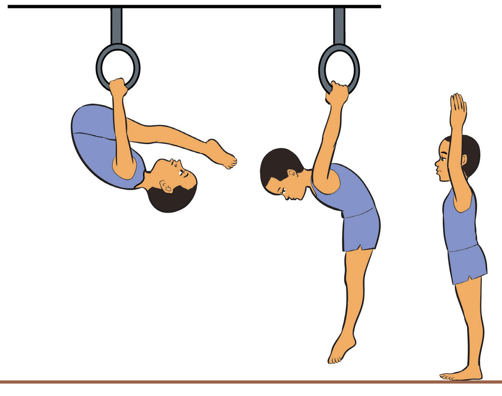

Skin-the-cat dismount
The skin-the-cat dismount is a movement in gymnastics, commonly performed on rings or a horizontal bar. It involves rotating the body backwards through the arms while hanging, passing through an inverted position, and then returning to a hang or dismounting completely. The following steps will help you practice skin-the-cat dismount:
- (i) Hang from a bar or ring with an overhand grip;
- (ii) Tuck your legs and rotate backwards, bringing your feet through your arms and over your head;
- (iii) Pass through a controlled upside-down position;
- (iv) Continue the rotation, lowering your legs back down toward the ground, Figure 4.28; and
- (v) You can let go and land on your feet instead of returning to a hang.

a b c
SPORTS STUDIES FORM TWO.indd 133
9/17/25 9:54 AM